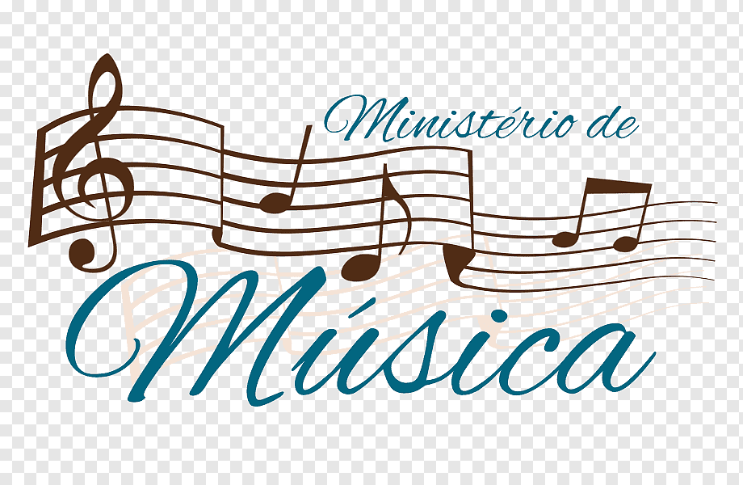

Excelencia Musical al Servicio de la Adoración
El Ministerio de Música es el componente técnico y artístico del Ministerio de Adoración. Nuestro equipo,
compuesto por músicos e ingenieros de sonido/visuales, se dedica a proveer un soporte musical de alta
calidad y un ambiente técnicamente óptimo para facilitar la adoración congregacional. Buscamos la excelencia
no por mérito propio, sino para honrar a Dios con lo mejor de nuestro talento y preparación.

Nuestra Labor
El equipo de Música desempeña un papel crucial en cada evento y servicio, incluyendo:
- Banda de Adoración: Músicos talentosos que proveen la base musical para el canto
congregacional y los momentos de ministración.
- Coro / Voces: Cantantes comprometidos que apoyan a los líderes de adoración y realzan
la experiencia vocal de la congregación.
- Soporte Técnico (Audio/Visuales): Garantizar que el sonido sea claro, balanceado y que
los elementos visuales (letras, gráficos) funcionen sin problemas.
- Composición y Arreglos: Desarrollar nuevo repertorio que esté doctrinalmente sólido y
sea relevante para la cultura de la iglesia local.
Manuales y Tutoriales por instrumentos
Esta es una sección para impulsar tu habilidad musical con nuestros recursos dedicados. Aquí encontrarás
guías prácticas para aprender
o perfeccionar tu técnica en instrumentos clave utilizados en la adoración:
Recursos de Canto y Formación General
El crecimiento continuo es clave para la excelencia en la adoración. Accede a nuestros tutoriales y
materiales de estudio diseñados para mejorar tus habilidades vocales, técnicas y espirituales:
Aprende sobre teoria musical
El equipo de Música desempeña un papel crucial en cada evento y servicio, incluyendo:
- Teoria Musical: Teoria Musical
- Coro / Voces: Cantantes comprometidos que apoyan a los líderes de adoración y realzan
la experiencia vocal de la congregación.
- Soporte Técnico (Audio/Visuales): Garantizar que el sonido sea claro, balanceado y que
los elementos visuales (letras, gráficos) funcionen sin problemas.
- Composición y Arreglos: Desarrollar nuevo repertorio que esté doctrinalmente sólido y
sea relevante para la cultura del Concilio.
Requisitos y Capacitación
Para mantener la excelencia y el enfoque espiritual, todos los miembros del equipo de música pasan por un
proceso de audición y formación:
- Audición: Evaluación de habilidades instrumentales o vocales.
- Discipulado: Compromiso con el crecimiento espiritual personal y la vida en comunidad.
- Capacitación Técnica: Talleres sobre manejo de instrumentos, software de audio, mezcla
de sonido y manejo de escenarios.